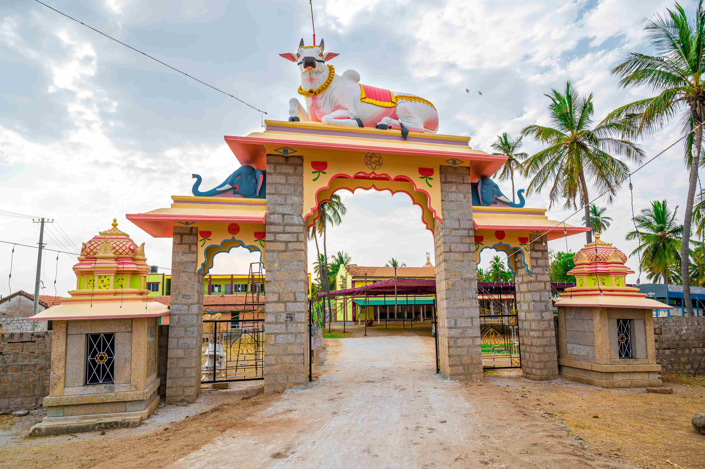
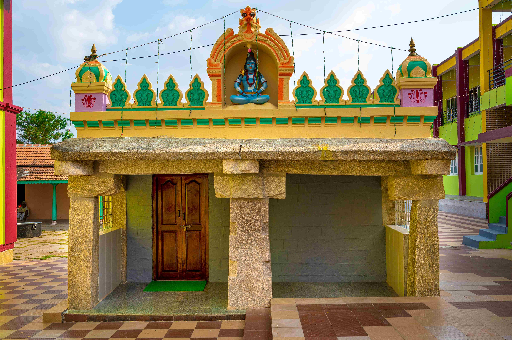
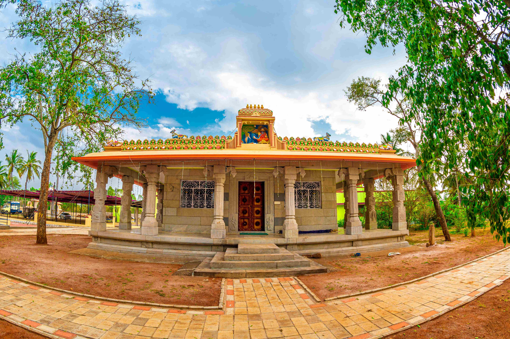

ಶ್ರೀ ಗುರು ಮದ್ದಾನೇಶ್ವರರ ದಿವ್ಯ ಆಗಮನ ಮತ್ತು ಸ್ಥಾಪನೆ
ಚಾಮರಾಜನಗರ ಜಿಲ್ಲೆ ಗುಂಡ್ಲುಪೇಟೆ ತಾಲ್ಲೂಕು ಪಡುಗೂರು ಗ್ರಾಮದಲ್ಲಿರುವ ಶ್ರೀ ಅಡವಿಮಠವು ಸುಮಾರು ೫೦೦ ವರ್ಷಗಳ ಹಿಂದೆ ಶ್ರೀ ಗುರು ಮದ್ದಾನೇಶ್ವರರಿಂದ ಸ್ಥಾಪನೆಗೊಂಡಿದೆ.
ವಿಜಯನಗರ ಸಾಮ್ರಾಜ್ಯದ ಆಗಿನ ದೊರೆಯಾಗಿದ್ದ ಪ್ರೌಢದೇವರಾಯನ ಆಸ್ಥಾನದಲ್ಲಿ ಎಡೆಯೂರು ಶ್ರೀ ಸಿದ್ಧಲಿಂಗೇಶ್ವರರಿಂದ ಧರ್ಮ ಪ್ರಚಾರದ ದೀಕ್ಷೆ ಸ್ವೀಕರಿಸಿದ ನೂರೊಂದು (೧೦೧) ವಿರಕ್ತರಲ್ಲಿ ಶ್ರೀ ಮದ್ದಾನ ಶಿವಯೋಗಿಗಳು ಹಾಗೂ ಕರಸ್ಥಲ ನಾಗಲಿಂಗದೇವರು ಈಗಿನ ಮೈಸೂರು ಪ್ರಾಂತ್ಯಕ್ಕೆ ಆಗಮಿಸುತ್ತಾರೆ. ಕರಸ್ಥಲದ ನಾಗಲಿಂಗ ದೇವರು ವಯೋಸಹಜದಿಂದ ಪ್ರಯಾಣ ಬೆಳೆಸಲಾಗದೆ ಗುಂಡ್ಲುಪೇಟೆ ತಾಲ್ಲೂಕಿನ ಮಂಚಹಳ್ಳಿಯ ಪ್ರಕೃತಿಯ ಮಡಿಲಲ್ಲಿ ಇರುವ ಗವಿಯೊಂದರಲ್ಲಿ ಲಿಂಗಾನುಷ್ಠಾನ ಮಾಡುತ್ತಾ ಅಲ್ಲೇ ಲಿಂಗದೊಳಗೆ ಬಯಲಾಗುತ್ತಾರೆ.
ಶ್ರೀ ಮದ್ದಾನ ಶಿವಯೋಗಿಗಳು ತಮ್ಮ ಪ್ರಯಾಣವನ್ನು ಮುಂದುವರಿಸುತ್ತಾ ಕರ್ನಾಟಕದ ಪಕ್ಕದಲ್ಲಿರುವ ಕೇರಳ ಹಾಗೂ ತಮಿಳುನಾಡಿನ ಗಡಿ ಪ್ರದೇಶಗಳಲ್ಲಿ ಧರ್ಮ ಪ್ರಚಾರ ಕೈಗೊಂಡು ಜನರಲ್ಲಿದ್ದ ಮೂಢನಂಬಿಕೆ, ಕಂದಾಚಾರ, ಅಜ್ಞಾನಗಳನ್ನು ಹೋಗಲಾಡಿಸುತ್ತಾ ತೇರಕಣಾಂಬಿಗೆ ಆಗಮಿಸುತ್ತಾರೆ.


ಮದಿಸಿದ ಆನೆಯನ್ನು ಶರಣಾಗಿಸಿದ ಶಿವಯೋಗಿ
ಆಗ ತೇರಕಣಾಂಬಿಯಲ್ಲಿ ಆಳ್ವಿಕೆ ಮಾಡುತ್ತಿದ್ದ ದೊರೆ ಜಗಪತಿರಾಯನು ವೈಷ್ಣವ ಮತಾವಲಂಬಿಯಾಗಿದ್ದನು. ಶ್ರೀ ಮದ್ದಾನ ಶಿವಯೋಗಿಗಳು ಶರಣ ಧರ್ಮವನ್ನು ಪ್ರಚಾರ ಮಾಡುತ್ತಿದ್ದುದನ್ನು ಆತನಿಗೆ ಸಹಿಸಲಾಗಲಿಲ್ಲ. ಆ ಕಾರಣದಿಂದ ಆತ ಶಿವಯೋಗಿಗಳಿಗೆ ಇನ್ನಿಲ್ಲದ ಕಷ್ಟ-ಹಿಂಸೆಗಳನ್ನು ನೀಡುತ್ತಾನೆ. ಆದರೆ ಶಿವಯೋಗಿಗಳು ಇದಾವುದಕ್ಕೂ ಜಗ್ಗದೇ ಇದ್ದಾಗ ಅವರ ಮೇಲೆ ಮದಿಸಿದ ಕಾಡಾನೆಯನ್ನು ಬಿಟ್ಟು ಕೊಲ್ಲಿಸಲು ಪ್ರಯತ್ನಿಸುತ್ತಾನೆ.
ಆದರೆ ಶಿವಯೋಗಿಗಳು ಆ ಮದಿಸಿದ ಆನೆಯನ್ನೇ ತಮ್ಮ ದಿವ್ಯ ಶಿವಯೋಗ ಶಕ್ತಿಯಿಂದ ಶಾಂತವಾಗಿಸಿ, ತಮ್ಮ ಮುಂದೆ ಮಂಡಿಯೂರಿ ಶರಣಾಗುವಂತೆ ಮಾಡಿದರು! ಅಷ್ಟೇ ಅಲ್ಲದೆ, ಅದರ ಮೇಲೆ ಕುಳಿತು ತೇರಕಣಾಂಬಿಯ ರಾಜಬೀದಿಗಳಲ್ಲಿ ಪ್ರಶಾಂತವಾಗಿ ಸಂಚರಿಸಿದ ಪವಾಡವನ್ನು ಕಂಡು ಜಗಪತಿರಾಯ ದಿಗ್ಭ್ರಮೆಗೊಂಡು ಪಾದಗಳಿಗೆ ಸಾಷ್ಟಾಂಗ ನಮಸ್ಕಾರ ಹಾಕುತ್ತಾನೆ. ಶಿವಯೋಗಿಗಳ ದಿವ್ಯ ಶಕ್ತಿಯನ್ನು ಕಂಡ ರಾಜ ಹಾಗೂ ಆತನ ಧರ್ಮಪತ್ನಿ ರಾಣಿ ಅಂಬಿಕೆಯು ಶರಣ ಧರ್ಮಾವಲಂಬಿಗಳಾಗಿ ದೀಕ್ಷೆ ಸ್ವೀಕರಿಸುತ್ತಾರೆ.
ಅಂದಿನಿಂದ ಶಿವಯೋಗಿಗಳು 'ಶ್ರೀ ಮದ್ದಾನೇಶ್ವರರು' ಎಂಬ ಪವಿತ್ರ ಹೆಸರಿನಿಂದ ಪ್ರಸಿದ್ಧರಾಗಿ, ಪಡುಗೂರು ಗ್ರಾಮದ ಉತ್ತರಕ್ಕೆ ನೆಲೆ ನಿಂತು ಶ್ರೀ ಅಡವಿಮಠವನ್ನು ಸ್ಥಾಪಿಸಿದರು.
"ಶರಣು ಮದ್ದಾನೆಶಾಂತನೆ ಪ್ರೌಢರಾಜೇಂದ್ರ ಗುರುವ ನಿಮ್ಮಯ ನಾಮ ಕೇಳು ಮದ್ದಾನೆಯಂ ತರಿಸಿ ನಿಮ್ಮಯ ಸತ್ವ ನೋಳ್ಪೆನೆಂಬುತ ಬಂದ ಪರಮಪುರುಷನೆ ಕೇಳೆನೆ...
ಎಂದ ಶಾಂತನ ನುಡಿಗೆ ಮದದಾನೆ ತರಿಸುತಂ ಮುಂದೆ ನಿಲಿಸಲು ನೋಡಿ ಸೊಂಡಿಲವ ಪಿಡಿಕೊಂಡು ನಿಂದು ಝಂಕಿಸಲು ಗಡಗಡನೆ ಕಂಪಿಸುತ ಗಜ ಕೆಡೆದು ಭೂಮಿಗೆ ಬೀಳಲು...||"
ಆದಿ ಪರಂಪರೆ ಮತ್ತು ತಪೋನಿಷ್ಠೆ
ಶ್ರೀ ಮದ್ದಾನೇಶ್ವರರ ನಂತರ ಶ್ರೀ ಮಠದ ವಿರಕ್ತ ಪರಂಪರೆಯ ಪೀಠವನ್ನಲಂಕರಿಸಿದ ಶ್ರೀ ಶಿವಲಿಂಗಸ್ವಾಮಿಗಳು, ಶ್ರೀ ಜಡೆ ಸ್ವಾಮಿಗಳು, ಶ್ರೀ ಮಹಾಂತ ಸ್ವಾಮಿಗಳು, ಶ್ರೀ ವಿರಕ್ತ ಸ್ವಾಮಿಗಳು ಸಹ ಧರ್ಮ ಜಾಗೃತಿಯ ಕೈಂಕರ್ಯವನ್ನು ನಿಷ್ಠೆಯಿಂದ ಮುಂದುವರಿಸಿಕೊಂಡು ಬಂದರು. ಅವರ ತಪಃಶಕ್ತಿಯಿಂದ ಪಡುಗೂರು ಮಠವು ಸುತ್ತಮುತ್ತಲಿನ ಭಕ್ತರ ಪಾಲಿನ ಜಾಗೃತ ಪುಣ್ಯಕ್ಷೇತ್ರವಾಗಿ ಬೆಳಗಿತು.
ಲಿಂ. ಶ್ರೀ ಶಿವಕುಮಾರಸ್ವಾಮಿಗಳ ಕಾಯಕ ಕ್ರಾಂತಿ
ಕೆಲವು ವರ್ಷಗಳ ಕಾಲ ಅನಾಯಕತ್ವದಿಂದ ಮಠವು ಸಂಕಷ್ಟಕ್ಕೆ ಸಿಲುಕಿದ್ದಾಗ, ೧೯೨೮ರಲ್ಲಿ ಪೀಠಾಧಿಕಾರ ವಹಿಸಿಕೊಂಡ ಪೂಜ್ಯ ಶ್ರೀ ಶಿವಕುಮಾರಸ್ವಾಮಿಗಳವರು ಮಠದ ಜಮೀನನ್ನು ಫಲವತ್ತಾದ ಕೃಷಿ ಭೂಮಿಯನ್ನಾಗಿ ಪರಿವರ್ತಿಸಿದರು. ೧೯೩೯ರಲ್ಲಿ ಕಬ್ಬಹಳ್ಳಿಯಲ್ಲಿ ಹಾಗೂ ನಂತರ ಗುಂಡ್ಲುಪೇಟೆ ಮತ್ತು ಮೈಸೂರಿನಲ್ಲಿ ವಿದ್ಯಾರ್ಥಿನಿಲಯಗಳನ್ನು ಸ್ಥಾಪಿಸಿ ಸಹಸ್ರಾರು ಬಡ ವಿದ್ಯಾರ್ಥಿಗಳಿಗೆ ಅನ್ನ-ವಸತಿ ಸಹಿತ ಶಿಕ್ಷಣ ನೀಡಿದ ಮಹಾ ಚೇತನ.
ಪೂಜ್ಯ ಶ್ರೀ ಶಿವಲಿಂಗೇಂದ್ರಸ್ವಾಮಿಗಳವರ ಮಾರ್ಗದರ್ಶನ
ಲಿಂಗೈಕ್ಯ ಶ್ರೀ ಶಿವಕುಮಾರಸ್ವಾಮಿಗಳವರ ಕೃಪಾಶೀರ್ವಾದ ಪಡೆದು ಮಠದ ಪರಂಪರೆಯನ್ನು ಮುನ್ನಡೆಸುತ್ತಿರುವವರು ಪ್ರಸ್ತುತ ಪೀಠಾಧ್ಯಕ್ಷರಾದ ಪೂಜ್ಯ ಶ್ರೀ ಶಿವಲಿಂಗೇಂದ್ರಸ್ವಾಮಿಗಳವರು. ಸಂಸ್ಕೃತದಲ್ಲಿ ಸ್ನಾತಕೋತ್ತರ (M.A.) ಪದವಿ ಪಡೆದಿರುವ ಇವರು ೧೯೮೭ರ ಫೆಬ್ರವರಿ ೧೧ರಂದು ಸಿದ್ಧಗಂಗಾ ಕ್ಷೇತ್ರದ ಪರಮಪೂಜ್ಯ ಶ್ರೀ ಶ್ರೀ ಶಿವಕುಮಾರ ಮಹಾಸ್ವಾಮಿಗಳವರ ಹಾಗೂ ಸುತ್ತೂರು ಜಗದ್ಗುರು ಶ್ರೀ ಶ್ರೀ ಶಿವರಾತ್ರಿ ದೇಶಿಕೇಂದ್ರ ಮಹಾಸ್ವಾಮಿಗಳವರ ದಿವ್ಯ ಸಾನ್ನಿಧ್ಯದಲ್ಲಿ ದೀಕ್ಷೆ ಪಡೆದರು.
ಇವರ ನೇತೃತ್ವದಲ್ಲಿ ಗುಂಡ್ಲುಪೇಟೆಯಲ್ಲಿ ಶ್ರೀ ಮದ್ದಾನೇಶ್ವರ ವಿದ್ಯಾಸಂಸ್ಥೆ (ನರ್ಸರಿಯಿಂದ ಪ್ರೌಢಶಾಲೆಯವರೆಗೆ), 'ಮಹಾಮನೆ' ಉಚಿತ ಶಿಕ್ಷಣ ಯೋಜನೆ, ಹಿರಿಯರ ಮನೆ (ವೃದ್ಧಾಶ್ರಮ), ಗೋಶಾಲೆ ಹಾಗೂ ಶಿಥಿಲಾವಸ್ಥೆಯಲ್ಲಿದ್ದ ಪವಿತ್ರ ಗದ್ದುಗೆ, ಪುಷ್ಕರಣಿ ಹಾಗೂ ಭವನಗಳ ಜೀರ್ಣೋದ್ಧಾರ ಕೈಗೊಳ್ಳಲಾಗಿದೆ.

ಶ್ರೀ ಮಠದ ಮೂಲ ಮೌಲ್ಯಗಳು
ಕಾಯಕವೇ ಕೈಲಾಸ
ಯಾವ ಕಾಯಕವೂ ಕೀಳಲ್ಲ, ಸತ್ಯ-ಶುದ್ಧ ಕಾಯಕದಿಂದಲೇ ಆತ್ಮೋನ್ನತಿ ಸಾಧ್ಯವೆಂಬ ಬಸವ ತತ್ವದ ಆಚರಣೆ.
ನಿತ್ಯ ದಾಸೋಹ
ಬಂದ ಅತಿಥಿ-ಭಕ್ತರಿಗೆ, ವಿದ್ಯಾರ್ಥಿಗಳಿಗೆ ಯಾವುದೇ ಭೇದ-ಭಾವವಿಲ್ಲದೆ ಅನ್ನ ಮತ್ತು ಜ್ಞಾನ ದಾಸೋಹ ನೀಡುವುದು.
ದಯೆಯೇ ಧರ್ಮದ ಮೂಲ
ಮಾನವೀಯ ಕಳಕಳಿ, ಹಿರಿಯರ ಸೇವೆ, ಜೀವ ಸಂಕುಲದ ರಕ್ಷಣೆ ಮತ್ತು ಪರಿಸರ-ಗೋ ಸಂರಕ್ಷಣೆ ಶ್ರೀ ಮಠದ ಉಸಿರು.